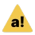

Welcome to ma pona!
Welcome! Below are some frequently asked questions about ma pona. We hope that you find this resource helpful. Please let us know if you have any suggestions for more questions!
Preface: these rules are important, but honest mistakes are never a problem. It's more important that you learn from your mistakes and improve, rather than never making a mistake in the first place. The rules and discussion here is a starting point for you to learn how to treat others fairly and kindly on the server, not the end-all for all enforcement. We are always here to help you learn!
The following content may not be discussed publically. There are dedicated channels for these topics.
These topics may be discussed publically, but must be spoilered.
Additionally, any person may request that a discussion be held in spoilers if it is causing them discomfort. The topics above are not a comprehensive list, but a minimum of what must be hidden. If a topic is making someone uncomfortable, either spoiler the topic or do not discuss it on the server.
The goal of content warnings is to make spaces for discussion safe from potentially triggering or anxiety-inducing imagery and discussion. People present may opt into such discussions if they are properly marked with a content warning.
In public, use content warnings like this: topic: || spoiler bars ||. For example:
politics: || a politics-related statement ||
Food discussion must be in #toki-moku, accessed via a role in #poki-jan
Math discussion must be #toki-nanpa, accessed via a role in #poki-jan
All other content warning topics must be spoilered if discussed. Violent, pornographic, graphic, illegal, and uncomforting imagery is disallowed, even in spoilers.
^ back to topMods have either or both of the roles jan-lawa and jan-pali. This is available at the top
of the server’s member list.
@janet blackquill#6507@J.#3638@LCP#0968@Lena#6844@jan Kapilu#7607@Pensa#6382@AcipenserSturio#5077@kala#1161@bucketfish#3961@Jez#1993@jan Sijo#4498@tbodt#7244@Raacz106#5873@BananaTreeLabs#2074@rusted#2096Any violation of the rules listed in #lawa, including but not limited to: disrespect, racism,
transphobia, aggression, sexual content, violent content, advertising without permission, and repeated off-topic
discussion in the wrong channels. You should also report anything that makes you uncomfortable, even if you are not
sure whether it violates the rules or not.
React with  :report_this_post_to_the_mods: on a potentially
offending message. A bot will remove the react for you and forward the message to the mods.
Tone tags are an accessibility tool to help understand the tone of written text. Use them to have your message read
with a specific tone, especially if the tone would be ambiguous. There are well known tonetags you may use, but if
you want to use one that isn’t on the list below, you must write it fully: /not mad.
Do not use tonetags as a joke, or to intentionally mislead. This is harmful to their use and makes communication more difficult.
The following tonetags are in use on the server:
/j - joking/lh - light hearted/gen - genuine/srs - serious/ref - making a reference/s - sarcasmWhen you first join, you will have access to these categories:
kuluputoki pona tasotoki ponatoki utaluka ponasuli kulupuAlso, many channels in these categories have threads for more specific discussion. That's a lot, so here is some small information.
First, look in kulupu for #lawa - the server rules. Then look in toki pona
for #toki-pona. When you come back later, look in #poki-jan for
roles, and explore the rest of the channels at your leisure! Here is a short list of recommendations, then the
entire channel list.
kulupu#lawa - rules!#poki-jan - get roles for yourself to explore the server more.#poki-toki - roles for access to non-English language channels.toki pona taso#tpt-lili - a toki pona only channel for beginners.toki pona#toki-pona - general discussion in English or toki pona.#pana-sona - ask questions about toki pona here!#toki-pona-kin and #pana-sona-kin!kulupu: community#lawa - rules and community info.#ijo-sin - announcements and updates about the server. #tawa-jan - leave and join notices.#seme-li-lon - feed from reddit and youtube.#nimi-pu-ale - dictionary from the official book.#poki-jan - role selection channel.#poki-toki - language role selection.#pona-kulupu - starboard, messages with 6+ star reacts go here.toki pona taso - toki pona only (english allowed in || spoilers ||) #tpt-ale - general chat.#tpt-lili - beginner friendly channel.#tpt-musi - discuss games, content, memes.#tpt-sona - discuss science, arts, math.#tpt-nasin - discuss politics, religion, culture.#sitelen-pona-taso - talk using the sitelen pona writing system using a bot.toki pona - toki pona (english allowed!)#lipu - post resources, completed projects (no conversation).#toki-pona - talk in or about toki pona.#toki-pona-kin - for when #toki-pona is busy.#pana-sona - questions/teaching channel.#pana-sona-kin - questions/teaching channel when #pana-sona is busy.#sona-musi - experimental grammar discussion and analysis.#pali-musi - discuss toki pona projects, share work in progress.#sona-kulupu - poll channel (discussion goes in the thread).toki Inli ala - non-english channels. You can join these in #poki-toki. toki uta - voice chats#tomo-toki - text channel to use during voice chats.🔉toki uta - general voice chat.🔉toki uta lili - general voice chat, with size limit. 🔉toki pona taso - toki pona only voice chat.🔉toki pona taso lili - toki pona only voice chat, with size limit.🔉pana sona - teaching voice channel.luka pona - sign language tokiponido#lipu-luka - sharing resources/content for luka pona (no conversation).#luka-pona - general chat about luka pona.#luka-pona-taso - conversation in luka pona only (using videoiles).🔉sitelen tawa pi luka pona - video channel for luka pona lessons and conversation. Click the
"deafen" button on discord to remove your sound!suli kulupu - community affairs#wile-kulupu - suggestions for the server, and discussion about these suggestions.#toki-lawa - opt-in moderation and transparency channel. ante opt-in off-topic channels#ijo-ante general off-topic channel.#ijo-ante-kin for when #ijo-ante is busy. #toki-toki - discussion of language and linguistics.#toki-moku - discussion of food. This is the only channel in ma pona where food does not need a
content warning.#toki-nanpa - discussion of maths, technology, and other technical subjects.musi - games and art#musi - general channel for games and art.#musi-manka - Minecraft.#musi-ako - you can play acrophobia here.misc#jaki - spam and bot commands.🔉lape - AFK channel.#nasin - a place to teach and learn about the ways that people in the world are. This is not a
place for debate or giving takes. If you wish to access this channel, you must read and agree to some additional
rules (type ... nasinkama in #jaki) and then ask a jan pali for access. tomo pini - archived channels, read only.Roles on discord are labels for user accounts. They are specific to each discord server, and can be used for multiple things, including:
On ma pona, you gain roles by using a reaction on one of the role management posts in #poki-jan or #poki-toki.
There are quite a few bots on ma pona, which all serve different purposes:
/n [word]. It also allows you to use sitelen pona via
/sp [toki pona text].@acro role to play!.n [word] or ... [quote]. More
info at ... help#sona-kulupu. Also performs moderation functions.